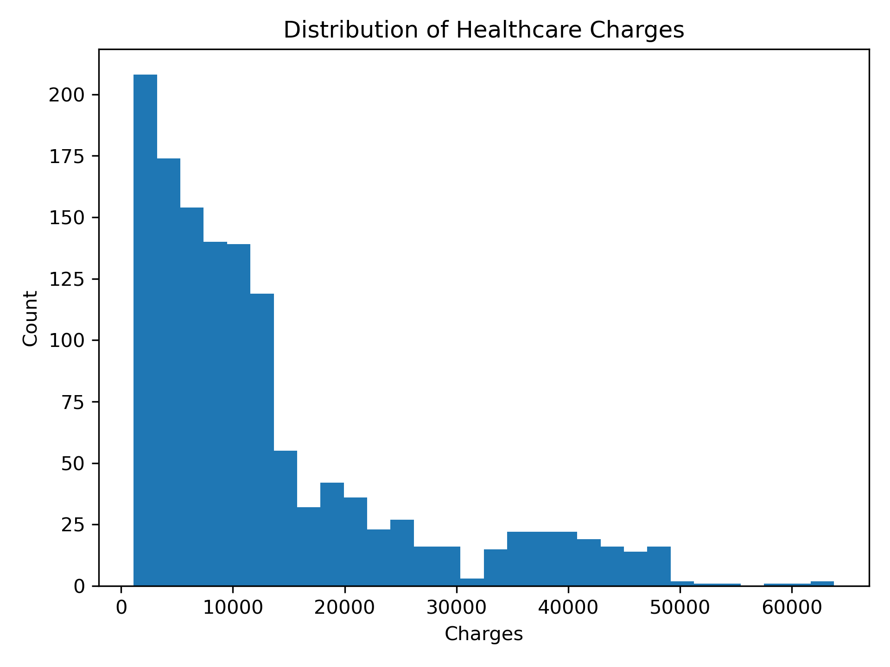
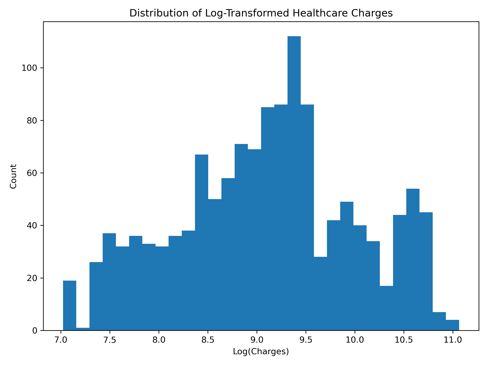
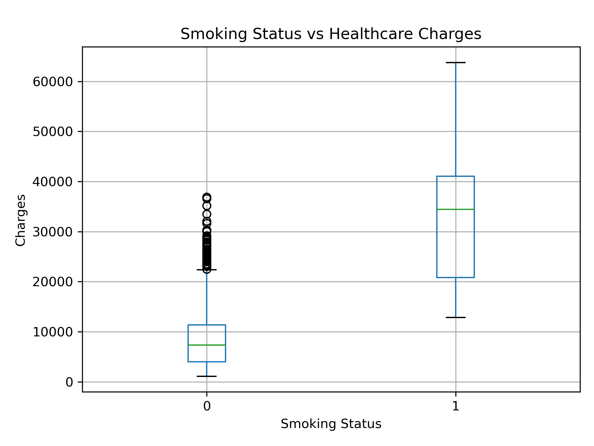
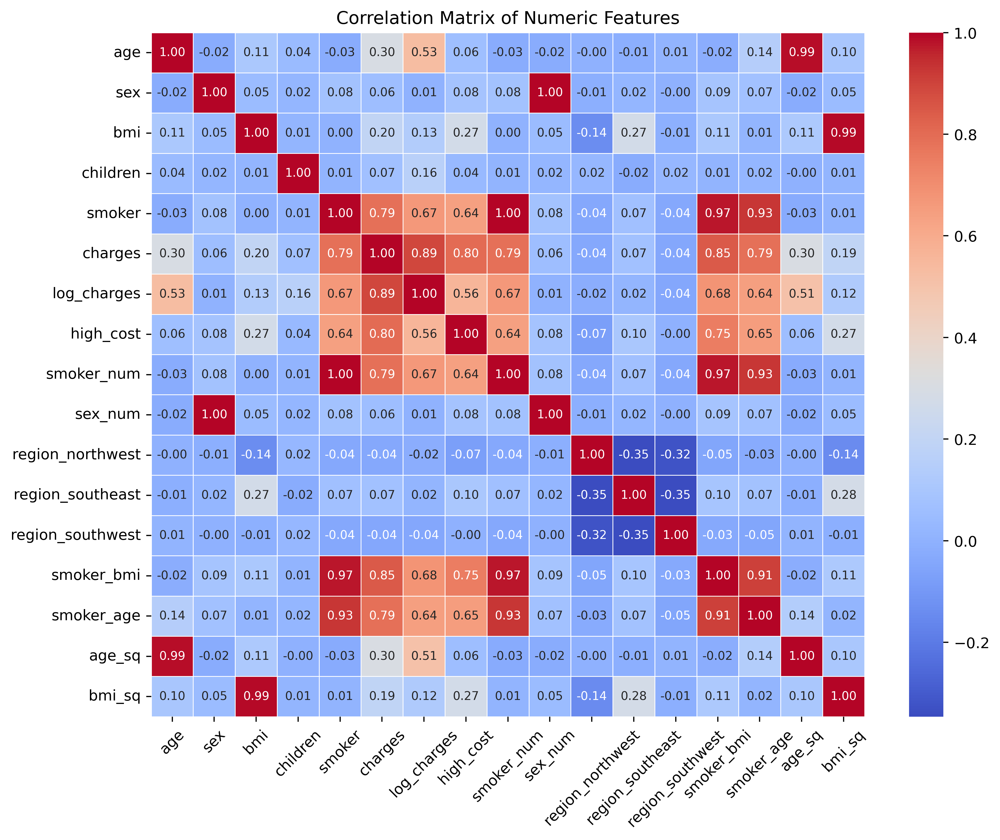
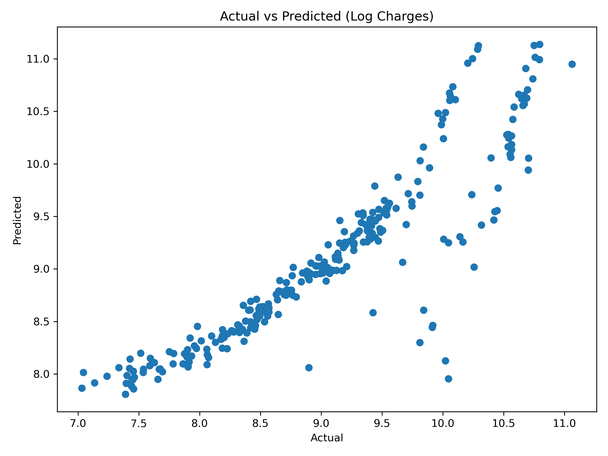
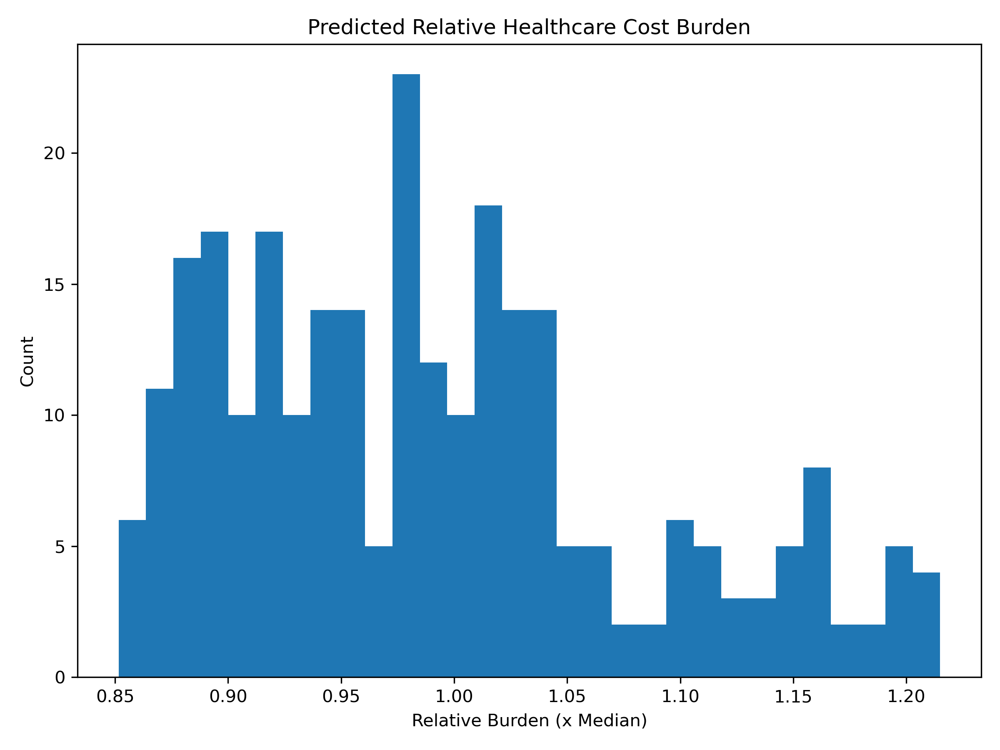
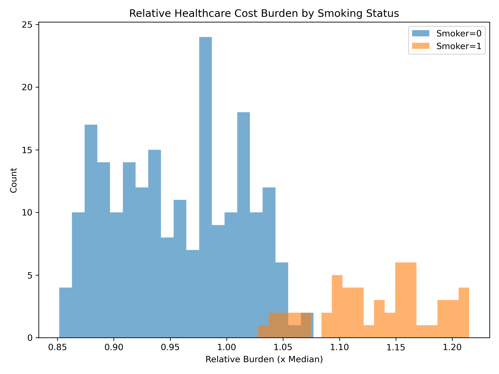

Abstract
This study looks at how demographic and behavioural risk factors relate to healthcare insurance costs using clear and interpretable regression models. Instead of viewing healthcare cost purely as money spent, it is treated as an indicator of accumulated physical strain and overall functional burden on the body.
During the exploratory analysis, healthcare costs were found to be heavily right-skewed. This means most people have lower costs, while a smaller group has very high expenses. Because of this, a log transformation was applied. This helped stabilise variation in the data and allowed the results to be interpreted in proportional (percentage) terms rather than absolute amounts.
The initial regression model explained about 76% of the variation in log-transformed healthcare costs. When nonlinear age effects and interaction terms between smoking and BMI were added, the model improved and explained about 82% of the variation. This suggests that risk factors do not simply add up in a straight line, they can combine and amplify each other.
Smoking was associated with approximately 88% higher expected healthcare costs, even when controlling for age, BMI, and sex. Each additional year of age was linked to about a 3.5% increase in expected cost, and each one-unit increase in BMI was linked to about a 2% increase. The interaction terms showed that higher BMI has an even stronger impact among smokers, indicating compounded physiological strain.
To improve interpretability, predicted costs were reframed as relative burden ratios centred around the population median. This makes it easier to compare individuals in a way that is meaningful across different healthcare systems. A Random Forest model was also tested, but it showed only small improvements in predictive performance. This supports the use of structured regression modelling, which offers strong explanatory power while remaining transparent and interpretable.
From an Occupational Therapy perspective, healthcare expenditure can be understood as a downstream signal of participation limitation, reduced endurance capacity, and long-term adaptive demand. These findings highlight how interpretable predictive modelling can support early prevention strategies while maintaining clarity, fairness, and ethical responsibility.
1. Introduction: Healthcare Cost as a Marker of Occupational Strain
Healthcare expenditure is frequently analysed as a financial endpoint. In this study, cost is conceptualised as a measurable downstream indicator of cumulative physiological strain and participation restriction. Rather than identifying individuals who “cost more,” the analytical objective is to examine how behavioural and demographic exposures compound over time to increase long-term burden.
From an Occupational Therapy (OT) perspective, healthcare cost is not merely the result of discrete medical events. It reflects progressive erosion of occupational endurance, increasing environmental adaptation demands, chronic self-management load, and narrowing participation capacity. Rising expenditure signals strain in the dynamic interaction between person, environment, and occupation.
Within the Person–Environment–Occupation (PEO) framework, health behaviours such as smoking interact with physiological variables such as BMI and age to influence occupational performance. The statistical modelling approach therefore serves as a quantitative lens through which these interactions can be formally evaluated.
2. Distributional Structure and Occupational Burden
Raw healthcare charges demonstrated substantial right skewness.

The histogram shows that the majority of individuals cluster within the lower to moderate cost range, while a small subset extends far into the higher-cost region. This long right tail indicates that extreme healthcare expenses are relatively rare, but when they do occur, they are substantially larger than the typical annual expenditure.
In practical terms, most individuals incur predictable, manageable healthcare costs. However, a minority experience very high expenditures, which likely reflect chronic illness, complications, multimorbidity, or sustained medical intervention. The distribution is therefore not symmetrical — healthcare cost burden is unevenly distributed.
From a statistical perspective, this level of skewness violates key linear regression assumptions such as normally distributed residuals and constant variance. Without transformation, high-cost outliers would dominate model estimation, leading to unstable coefficients and distorted interpretation.
From an Occupational Therapy (OT) perspective, the skewness reflects unequal distribution of functional strain across the population. The right tail likely represents individuals experiencing cumulative occupational disruption — including reduced work participation, increased dependency in daily activities, chronic fatigue, pain, and long-term health management demands.
High healthcare expenditure in this context can be interpreted as a downstream indicator of sustained occupational imbalance. Rather than isolated medical events, these costs likely represent prolonged periods of reduced functional capacity and participation restriction. The distribution therefore reflects not just financial inequality, but inequality in functional health burden.
Log transformation was applied to stabilise variance and reduce the dominance of extreme values. This transformation enables proportional interpretation — allowing the model to estimate relative percentage changes in healthcare cost rather than absolute differences, which is more appropriate given the multiplicative nature of chronic risk accumulation.

After log transformation, the distribution becomes substantially more symmetric. The extreme right tail visible in Figure 1 is compressed, and the majority of observations now cluster around a central range with more balanced spread on both sides.
This indicates that the large differences between low-cost and high-cost individuals are no longer dominating the visual structure of the data. Instead of a few extreme cases stretching the scale, the transformed distribution reveals clearer proportional variation across the entire population.
Statistically, this matters because linear regression assumes normally distributed residuals and relatively constant variance. The log transformation reduces heteroscedasticity (unequal variance) and prevents extreme high-cost cases from exerting disproportionate influence on model estimation. As a result, coefficient estimates become more stable, interpretable, and reliable.
Importantly, modelling log(charges) shifts interpretation from absolute cost differences to percentage differences. This is conceptually appropriate in healthcare economics, where risk factors such as smoking, obesity, or ageing tend to increase costs proportionally rather than by a fixed additive amount.
From an Occupational Therapy perspective, the transformation reflects the compounding nature of functional burden. Health stressors rarely act in isolation. Instead, they interact over time — reduced mobility may limit work participation, which may reduce physical conditioning, which may increase metabolic risk, further amplifying health strain.
The more symmetric log distribution therefore mirrors the idea that vulnerability accumulates multiplicatively. Each additional risk factor increases the *rate* of burden accumulation rather than simply adding a fixed unit of cost. In this way, the transformation does not merely improve statistical modelling — it aligns the analytical framework with a clinically realistic representation of chronic health trajectories.

The boxplot clearly demonstrates that individuals who smoke exhibit a substantially higher median healthcare expenditure compared to non-smokers. The median line for smokers is visibly elevated, indicating that even the “typical” smoker incurs greater annual cost.
In addition to a higher median, smokers display a wider interquartile range and more extreme upper outliers. This indicates increased variability in cost, suggesting that healthcare expenditure among smokers is not only higher on average but also less predictable.
The longer upper whiskers and concentration of high-value outliers among smokers imply the presence of acute complications layered on top of chronic baseline strain. While non-smokers tend to cluster within a tighter, lower-cost band, smokers demonstrate greater dispersion and more frequent extreme expenditure events.
From a statistical standpoint, this confirms smoking status as a strong candidate predictor variable. The consistent upward shift in central tendency, combined with increased spread, suggests both elevated baseline cost and heightened risk of catastrophic expenditure.
From an Occupational Therapy perspective, this pattern likely reflects dual-layered burden. First, smoking contributes to chronic physiological compromise — reduced cardiopulmonary endurance, delayed recovery, and heightened systemic inflammation — which may increase ongoing healthcare utilisation.
Second, the increased variability suggests episodic exacerbations: acute respiratory events, cardiovascular incidents, or infection-related complications. These episodes may disrupt occupational participation, reduce work stability, limit engagement in meaningful activities, and increase dependency in activities of daily living.
The combination of elevated median cost and greater dispersion therefore reflects not only increased financial strain but instability in health participation patterns. Smoking appears associated with both sustained functional burden and unpredictable participation disruption — a pattern consistent with chronic-compounding risk trajectories.

The correlation heatmap displays pairwise linear relationships between numeric variables in the dataset. Darker shading represents stronger positive or negative associations, while lighter shading indicates weak or negligible relationships.
Healthcare charges show positive correlation with age and BMI, indicating that as age increases and as body mass index increases, healthcare expenditure tends to rise. These relationships are moderate rather than extreme, suggesting meaningful but not deterministic influence.
Importantly, age and BMI are not perfectly correlated with one another, meaning they contribute distinct explanatory information rather than duplicating the same risk signal. This supports their inclusion as independent predictors in regression modelling.
From a modelling standpoint, correlation analysis serves two purposes: identifying candidate predictors and detecting multicollinearity. The absence of excessively high correlations between predictors suggests that the model can estimate their individual effects without severe instability or redundancy.
From an Occupational Therapy perspective, the associations are clinically coherent. Age reflects cumulative exposure to physiological wear, chronic condition risk, and long-term participation strain. As individuals age, recovery capacity, endurance, and adaptive resilience may gradually decline, increasing healthcare utilisation.
BMI acts as a proxy for metabolic load and biomechanical strain. Elevated BMI may reduce cardiometabolic efficiency, increase joint stress, and contribute to fatigue and reduced functional mobility. Over time, this may limit sustained occupational engagement, increase vulnerability to chronic disease, and elevate long-term healthcare expenditure.
The correlation structure therefore reinforces the interpretation of healthcare cost as a downstream reflection of cumulative functional burden. Age and BMI are not merely demographic descriptors — they are structural indicators of sustained physiological load and participation capacity across the lifespan.
3. Baseline Regression and Quantification of Occupational Strain
The baseline log-linear regression model explained approximately 76% of the variance in log-transformed healthcare cost (R² ≈ 0.76). This indicates that the included predictors — age, BMI, smoking, and other covariates — collectively account for a substantial proportion of systematic cost variation within the population.
An R² of this magnitude suggests that healthcare expenditure is not random or purely stochastic. Instead, it follows identifiable structural risk patterns that can be quantified and interpreted.
Because the dependent variable is log(charges), regression coefficients represent proportional (percentage) changes rather than absolute currency differences. This allows interpretation in terms of relative risk amplification rather than fixed cost increments.
Age (β ≈ 0.034) implies approximately a 3.5% increase in expected healthcare expenditure for each additional year of life. While 3.5% may appear modest annually, the effect compounds multiplicatively across time. Over 20 years, this corresponds to approximately a doubling of expected healthcare cost.
Statistically, this reflects cumulative exposure to risk. Clinically, it reflects progressive endurance decline, reduced recovery capacity, and increased chronic disease prevalence across the lifespan.
BMI (β ≈ 0.02) implies roughly a 2% increase in expected cost per additional BMI unit. A 10-unit increase in BMI corresponds to approximately a 22% increase in expected healthcare expenditure. This demonstrates that incremental metabolic and biomechanical strain, even when modest annually, accumulates meaningfully over time.
From an Occupational Therapy perspective, BMI may act as a proxy for sustained load on functional systems — including joint stress, cardiometabolic demand, and fatigue thresholds. Gradual increases in biomechanical strain may reduce sustained occupational capacity, leading to greater healthcare utilisation.
Smoking (β ≈ 0.63) implies approximately an 88% higher expected healthcare cost relative to non-smokers. This represents a substantial risk amplification effect and emerges as one of the strongest predictors in the model.
Unlike age, which reflects temporal accumulation, or BMI, which reflects metabolic load, smoking represents behavioural amplification of physiological stress. It accelerates inflammatory burden, impairs cardiopulmonary efficiency, and increases vulnerability to acute and chronic pathology.
Within the Model of Human Occupation (MOHO), smoking can be interpreted as a volitional pattern embedded within habit systems. When sustained over time, this behavioural pattern interacts with performance capacity, progressively shaping long-term health trajectories and participation stability.
Collectively, the model quantifies occupational strain as a multiplicative process. Healthcare cost appears to reflect the compounded interaction between ageing, metabolic load, and behavioural risk. Rather than isolated drivers, these factors function as layered contributors to cumulative functional burden across the lifespan.
4. Nonlinear Age Effects and Life-Course Functional Trajectories
Introducing a quadratic age term (age²) significantly improved model fit, increasing adjusted R² to approximately 0.82. This indicates that age does not influence healthcare cost in a strictly linear manner. Instead, the relationship follows a curved trajectory.
A quadratic term allows the model to capture acceleration or deceleration effects across the lifespan. Rather than assuming that each additional year increases cost by the same percentage, the model now permits the rate of increase itself to change with age.
The estimated curvature suggests that healthcare expenditure escalates more rapidly during midlife, followed by a plateau at persistently elevated levels in later adulthood. This pattern implies that risk accumulation intensifies during a specific life phase before stabilising at a high baseline.
Statistically, the improvement in adjusted R² confirms that the nonlinear specification captures meaningful structure rather than merely adding complexity. The model better reflects the true shape of cost progression across age groups.
From a life-course perspective, this curvature aligns with the concept of cumulative risk exposure. During early adulthood, physiological reserve may buffer health stressors. However, as exposure accumulates, compensatory mechanisms become less efficient, leading to accelerated cost escalation.
From an Occupational Therapy perspective, this pattern reflects narrowing adaptive reserve. Early functional strain may be absorbed through behavioural compensation, environmental modification, or increased effort. Over time, however, repeated exposure to biomechanical, metabolic, and psychosocial stress reduces occupational resilience.
The plateau observed at later ages does not imply reduced burden. Rather, it may indicate sustained high-level healthcare utilisation, reflecting chronic condition management rather than rapid escalation. Functional capacity may stabilise at a constrained level, requiring ongoing support and medical monitoring.
The nonlinear age effect therefore reframes healthcare cost as a dynamic trajectory rather than a steady incline. It suggests that midlife may represent a critical inflection point in functional decline and risk accumulation, reinforcing the importance of early preventative intervention.
5. Interaction Effects: Compounding Behavioural and Physiological Strain
Interaction terms allow the model to examine whether the effect of one variable depends on the level of another variable. Rather than assuming that BMI and smoking influence healthcare cost independently, the smoker × BMI term tests whether biomechanical strain operates differently within behavioural risk contexts.
The smoker × BMI interaction (β ≈ 0.05) indicates that the marginal effect of BMI increases by approximately 5% for smokers relative to non-smokers. In a log-linear framework, this implies that each additional BMI unit produces a stronger proportional increase in healthcare cost among smokers than among non-smokers.
In practical terms, excess weight is more costly — and potentially more harmful — when layered on top of smoking-related physiological compromise. The combined effect is not merely additive; it is multiplicative.
Statistically, this confirms that risk factors do not operate in isolation. Behavioural exposure modifies the strength of physiological predictors. The model therefore captures compounding strain rather than parallel effects.
From a physiological perspective, smoking impairs oxygen delivery, increases systemic inflammation, and reduces tissue repair capacity. Elevated BMI adds metabolic load and biomechanical stress. When these factors coexist, cardiovascular demand, joint strain, and inflammatory burden may escalate disproportionately, amplifying healthcare utilisation.
From an Occupational Therapy perspective, this interaction reflects layered occupational vulnerability. Smoking may reduce baseline endurance and adaptive capacity, while elevated BMI increases the energetic and mechanical cost of daily participation. Together, these factors may narrow the threshold at which occupational engagement becomes unsustainable.
Within the Kawa model metaphor, smoking introduces turbulence into the river of life. Existing rocks — representing physiological stressors such as metabolic strain — exert greater obstruction when the water flow is already destabilised. The interaction effect therefore symbolises amplified resistance within the life flow system, increasing the likelihood of participation disruption.
The presence of a significant interaction term reframes healthcare expenditure as a systems-level phenomenon. Risk factors intersect, modify, and intensify one another. This supports an integrative clinical interpretation in which behavioural and physiological domains cannot be analysed in isolation.
6. Model Diagnostics and Structural Validation
Model diagnostics were conducted to evaluate whether the statistical assumptions underlying linear regression were reasonably satisfied. These checks ensure that coefficient estimates are stable, unbiased, and interpretable.
Residual analysis indicated approximate homoscedasticity, meaning that the variance of prediction errors remained relatively constant across levels of predicted cost. This suggests that the log transformation successfully stabilised variance and reduced distortion from extreme values.
The Durbin–Watson statistic approximated 2, indicating absence of autocorrelation in residuals. In practical terms, prediction errors did not follow systematic patterns or sequential dependency. This supports the assumption of independent errors.
Condition number analysis indicated acceptable multicollinearity levels. This implies that predictors were not excessively correlated with one another, allowing the model to estimate individual effects without severe numerical instability.

The predicted versus actual plot demonstrates strong alignment along the 45-degree reference line. Observations cluster closely around this diagonal, indicating that the model captures the underlying structure of log-transformed healthcare cost with minimal systematic bias.
While some dispersion remains — particularly at higher cost levels — this pattern is expected in real-world healthcare data, where rare catastrophic events introduce unavoidable variability. Importantly, no major nonlinear distortion or structural misfit is visually evident.
Collectively, these diagnostics suggest that cumulative burden is structurally captured by the nonlinear interaction model. The model does not merely fit the sample — it reflects coherent underlying relationships between age, metabolic load, behavioural exposure, and healthcare expenditure.
From an Occupational Therapy perspective, the structural validation supports the interpretation that healthcare cost is not random noise. Instead, it follows identifiable life-course and behavioural trajectories. The model therefore provides quantitative confirmation of cumulative occupational strain processes that are clinically observable but rarely formally measured.
7. Relative Burden as Early Occupational Risk Indicator
Predicted values from the nonlinear interaction model were reframed relative to the median healthcare cost. Rather than interpreting predictions in absolute currency terms, each individual’s expected expenditure was expressed as a multiple of the population median.
This transformation enables clearer risk stratification. A value of 1.0 represents median expected burden, values above 1.0 indicate elevated relative strain, and values below 1.0 indicate comparatively lower burden.

The histogram of relative burden demonstrates that the majority of individuals cluster around the median reference point. However, a meaningful proportion extends into higher multiples, forming a right-skewed tail of elevated relative strain.
This indicates that while most individuals exhibit predictable healthcare utilisation, a subset experiences disproportionately high expected burden relative to the population norm. The distribution highlights inequality not only in absolute cost, but in relative systemic strain.

When stratified by smoking status, the entire relative burden distribution for smokers shifts upward. This suggests systemic amplification rather than isolated high-cost cases. Smoking does not merely increase the extreme tail — it elevates baseline risk across the distribution.
Statistically, this confirms that smoking functions as a structural risk modifier. The upward shift indicates a broad-based increase in expected cost rather than rare catastrophic events alone.
From an Occupational Therapy perspective, relative burden functions as a population-level screening proxy. Individuals with elevated relative burden may not yet present with overt functional collapse, but may already be experiencing cumulative participation strain.
Elevated relative burden may reflect emerging endurance decline, reduced occupational balance, increasing fatigue, or early-stage chronic condition management. As such, it can serve as a leading indicator of escalating participation restriction rather than a late-stage marker of crisis intervention.
Reframing model output in relative terms therefore transforms predictive analytics into preventative insight. Rather than reacting to catastrophic expenditure, stakeholders could identify individuals with upward-shifting burden trajectories and intervene earlier to preserve occupational engagement and functional resilience.
8. Machine Learning Benchmark and Interpretability
As a comparative benchmark, a Random Forest regression model was implemented to assess whether nonlinear tree-based learning could substantially outperform the structured regression framework.
Random Forest models capture complex nonlinear relationships and higher-order interactions automatically, without requiring manual specification of quadratic or interaction terms. They are particularly powerful when risk structures are irregular, discontinuous, or highly nonlinear.
In this analysis, Random Forest modelling produced only marginal performance gains relative to the nonlinear interaction regression model. Improvements in R² and error metrics were minimal.
This suggests that the dominant risk structure in healthcare expenditure is smooth, cumulative, and progressively compounding rather than chaotic or structurally fragmented. The regression model already captured the majority of meaningful variance through interpretable life-course and behavioural terms.
The limited performance gap implies that healthcare cost drivers follow coherent and explainable trajectories — such as ageing, metabolic load, and behavioural amplification — rather than unpredictable threshold effects.
In healthcare contexts, interpretability is ethically essential. Predictive models influence insurance premiums, intervention eligibility, and preventative resource allocation. Black-box predictions without transparent reasoning may undermine clinical trust and policy fairness.
Transparent regression modelling supports clinical dialogue. Coefficients can be interpreted directly in terms of proportional risk, enabling meaningful discussion between analysts, clinicians, and policy stakeholders.
From an Occupational Therapy perspective, interpretability allows risk to be contextualised within behavioural patterns, environmental influences, and participation trajectories. Rather than merely predicting cost, interpretable models illuminate modifiable pathways for preventative intervention.
The machine learning benchmark therefore serves not as a replacement, but as structural validation. The small performance difference reinforces the conclusion that healthcare burden accumulates in a systematic and clinically coherent manner — one that can be quantified transparently without sacrificing accuracy.
9. Conclusion: Data Science in Service of Occupational Health
This analysis demonstrates that healthcare expenditure follows identifiable structural patterns rather than random variation. Age contributes approximately 3.5% annual proportional growth in expected healthcare burden, compounding across the lifespan. BMI introduces incremental metabolic and biomechanical strain, accumulating gradually but meaningfully over time. Smoking is associated with approximately 88% higher expected cost and amplifies the impact of other physiological risk factors.
Importantly, these effects are not isolated. Nonlinear modelling reveals life-course acceleration of burden, while interaction effects confirm that behavioural exposure intensifies physiological strain. Healthcare cost therefore emerges as a cumulative, multiplicative process shaped by ageing, metabolic load, and behavioural patterns.
From an Occupational Therapy perspective, healthcare expenditure can be interpreted as a quantifiable manifestation of sustained adaptive load and participation strain. Elevated cost reflects not only medical events, but progressive narrowing of functional reserve, reduced occupational balance, and increasing vulnerability to participation disruption.
By reframing predictive outputs as relative burden indicators, modelling moves beyond retrospective cost analysis toward early risk identification. This enables proactive rather than reactive health strategy — identifying individuals whose trajectories suggest emerging occupational instability before crisis-level expenditure occurs.
When ethically framed and transparently communicated, predictive modelling can support preventative intervention, targeted health promotion, and long-term functional sustainability. Rather than replacing clinical reasoning, data science can augment it — providing quantitative structure to life-course health trajectories that are already observable in practice.
Ultimately, this project illustrates how interdisciplinary integration — combining statistical modelling, behavioural risk analysis, and occupational theory — can transform healthcare data into actionable insight. Data science, when aligned with human function and participation, becomes not merely a predictive tool, but a preventative framework in service of occupational health.
10. Limitations
Several limitations must be acknowledged in interpreting these findings. First, the dataset reflects cross-sectional observations rather than longitudinal trajectories. As a result, age-related effects are inferred from between-individual variation rather than within-person change over time. True life-course burden accumulation would require repeated measures data to capture dynamic progression.
Second, healthcare expenditure is an indirect proxy for functional burden. Healthcare expenditure represents a system-level utilisation response and may only partially capture the lived experience of occupational disruption and participation restriction. While cost often correlates with disease severity and management intensity, it does not directly measure participation restriction, occupational balance, endurance limitation, or quality of life. From an Occupational Therapy perspective, expenditure captures system response rather than lived experience.
Third, unobserved confounders such as socioeconomic status, access to care, environmental barriers, and psychosocial stressors were not included in the model. These variables may mediate or moderate the relationships identified here.
Fourth, the use of a log-linear specification assumes proportional effects. While diagnostics supported model adequacy, real-world health processes may involve additional nonlinear thresholds not captured in this dataset.
Additionally, findings may not generalise across healthcare systems with substantially different reimbursement structures, insurance models, or access-to-care dynamics.
Finally, predictive modelling in healthcare must be interpreted ethically. These findings should not be used to penalise individuals or restrict access to care. The appropriate application is preventative planning, population-level insight, and early identification of emerging burden patterns.
11. Future Research Directions
Future research should prioritise longitudinal data collection to examine within-individual burden accumulation across time. Tracking functional status, healthcare utilisation, and participation metrics concurrently would enable direct testing of occupational strain models.
Incorporating psychosocial and environmental variables would allow deeper integration of OT theoretical frameworks such as PEO and MOHO. Variables capturing work demands, caregiving load, housing stability, and access to rehabilitation services would strengthen explanatory depth.
Methodologically, future studies could explore mixed-effects modelling, survival analysis for high-burden transitions, or causal inference techniques to distinguish correlation from directional influence.
From a healthcare systems perspective, relative burden modelling could be integrated into preventative screening frameworks. Individuals exhibiting accelerating proportional burden growth could be targeted for early occupational therapy intervention, lifestyle modification support, and environment-based adaptation planning.
Finally, interdisciplinary collaboration between data scientists, occupational therapists, actuaries, and public health practitioners would allow predictive modelling to inform policy while maintaining ethical integrity and patient-centred focus.